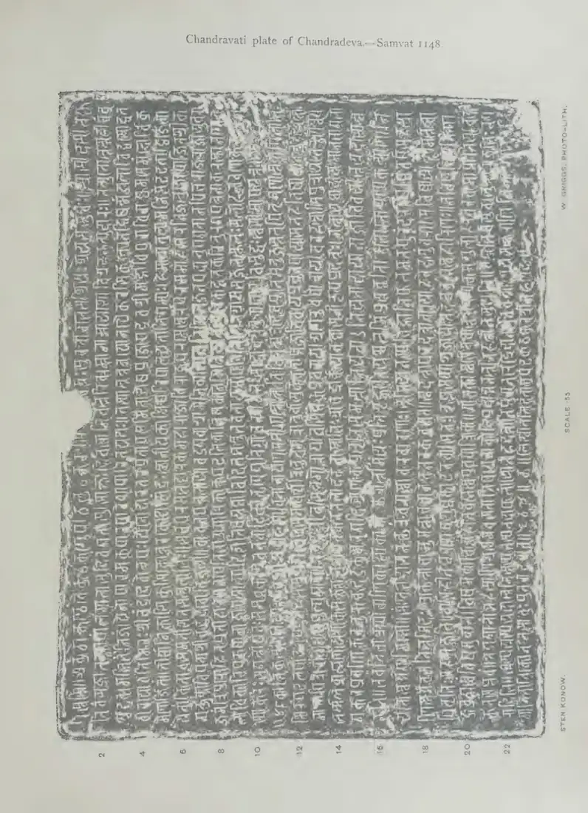

Chandrávatí plate of Chandradéva
CHANDRAVATI PLATE OF CHANDRADEVA.
SAMVAT 1148.
SAMVAT 1148.
BY STEN KONOW.
The plate containing this inscription was found on the inner slope of the left bank of the Ganges, near the water's edge, under the fort at Chandrâvatî, in the Benares District. Mr. Chhote Lal, the District Engineer of Benares, informs me that, owing to the erosive action of the river, portions of the fort were undermined and fell down from time to time. The plate fell into the river along with the walls of the fort, and was seen and picked up by the Public Works Department's boatman, who deposited it in the District Engineer's office at Benares. In March 1908 it was then finally handed over to the Director General of Archæology in India.
The plate, which is inscribed on one side only, measures 15 . The edges are fashioned thicker and raised into rims. In the upper part of the plate is a hole, through which passes a ring, about thick and 3" in diameter. On the ring slides a bell-shaped seal, 2 from top to bottom. The surface of the seal is circular and 2 in diameter. It represents in relief, on a slightly countersunk surface, a Garuḍa, with the body of a man and the head of a bird, kneeling and facing the proper right. Across the centre is the legend śrīvadach-(śrīmach)-Chandradêvah, and at the bottom a conch shell.
The plate contains 23 lines of writing. Parts of it are much worn, and the portion containing the date cannot be made out with certainty. The characters are Nâgarî, and the language is Sanskrit. With regard to orthography I shall only note that va is used both for va and for ba, and that the dental sibilant is often used instead of the palatal one; thus, =asîta-
1 Metre: Śârdûlavikrîdita.
2 It is possible that the name should be read Alhṇadêva.
for asīta-, l. 1, -vaṁsa- for -vaṁśa-, l. 2. There are several other misspellings and slips, especially towards the end.
After the invocation to Śrī common in other plates of the same family, our inscription proceeds to give the genealogy of the donor in four verses, which are well known from other inscriptions. We are told that Yasōvigraha had the son Mahīchandra, whose son again was Chandradēva, the issuer of the present grant. The inscription then goes on in prose, stating that the victorious king Chandradēva issues the following order to all the people assembled, residing in the Vađagavā-village in the Vāvana-pattulā, and also to the Rājas, Rājāis, Yuvarājas, councillors, chaplains, warders of the gate, generals, treasurers, keepers of records, physicians, astrologers, superintendents of gynæcums, messengers, the officers in charge of elephants, horses, towns, mines, sthānas and gōkulas:
“Be it known to you that the aforesaid village, with its water and dry land, with its mines of iron and salt, with its fishing places, with its ravines and saline soil, with and including its groves of madhūka and mango, grass and pasture land, with what is above and below, defined as to its four abuttals, up to its proper boundaries, has today, on the . . . day of the bright fortnight of Kārttika, Saṁvat 1148, been given by us for as long a time as moon and sun endure, with the pouring out of water from the palm of our hand, purified with gōkarna1 and kuśa-grass, to the Brāhmaṇ Varuṇṣvayasarman (-śvaraśarman), the son of Varāhasvāmi, the grandson of Aṇarudha, of the Vasishṭha gōtra, and whose only pravara is Vasishṭha, for the increase of the merit and fame of our parents and ourselves, after having today bathed here in the neighbourhood of Sauri (Śauri)-Narāyaṇa, after having duly satisfied the sacred texts, divinities, saints, men, beings, and groups of ancestors,2 after having worshipped the sun whose splendour is skilled in rendering the veil of darkness, after having worshipped Vāsudēva, the saviour of the three worlds, and after having sacrificed to the Fire an oblation with abundant milk, rice and sugar.”
The first point here that is worthy of notice is the date, which is the earliest known for Chandradēva, the other copper plate of his time being dated in Saṁvat 1154.3 It will be seen that the portion of it containing the tithi and the week day is illegible. Mr. Chhote Lal, who has examined the original, writes about this point,—
“Ordinarily, it might be thought that the excessive corrosion and incrustation of rust at this particular part of the plate was purely accidental, but from a minute examination of the imperfect and damaged letters which are still discernible, I am led to conclude that the excessive incrustation at this point was due to the fact that the surface of the plate was already damaged by somebody in his endeavour to make a correction in the date. It is remarkable that the name of the place or that of the stream in which the donor took his bath, is not mentioned in the inscription. Nor is there any mention of the occasion (eclipse, saṅkrānti, etc.) at which the gift was made. It would appear that Śauri-Narāyaṇa was in those days a very well-known place of pilgrimage requiring no further details to localise it, that the occasion presumably was the ordinary Kārttika-snāna, and that the date originally entered on the plate was paṁchadaśyāṇ gurau, but was afterwards attempted to be corrected into čkádaśyāṇ ravau. The é of the latter just overlaps the paṁ of the former; the ká of the latter being rather large has been so formed as to include the cha and to cover the space occupied by da of the former; while the space occupied by śyāṇ of the former has been utilised for the rather clumsily large da of the latter. It will thus be seen that the space originally occupied by the word paṁchadaśyāṇ, which was of normal size, was subsequently occupied by the much larger letters, é, kai and da, and there being no more space available for the final syllable śyāṇ, it was omitted. Similarly, the ra of
1 Compare Kielhorn, Ind. Ant. XV. p. 10, Note 57.
2 See ibidem, note 55.
3 Ind. Ant. XVIII. pp. 9 and ff.
ravau overlaps the gu of gurau and rau of the latter has been deformed into something like vau of the former. Now the question arises, "Why was the date corrected?" The reason may be that the grant was originally intended to be made on the painchadaśi, on the occasion of a lunar eclipse which was expected to take place on that date. A little calculation will show that the eclipse did actually occur on the specified date (corresponding to Thursday, the 7th of November, 1090 A.D.), but as the time of its occurrence was early in the following morning (according to calculation), it must have been very doubtful whether it would be visible at the place visited by Chandradėva. This circumstance may have been anticipated, and it may have been decided to make the donation on the preceding Prabôdhinî Ékádaśi (Sunday, the 3rd of November, 1090 A.D.) which was a most suitable day for the purpose, being the day on which Vishnu—the deity worshipped by Chandradėva—rises from his four months' sleep. I say all this may have been the cause of the alteration in the date, for there is no a priori reason against this supposition. But I consider it very unlikely that a Mahârâja, who changed his mind about the actual day of performing a religious ceremony, could have allowed a correction—and a clumsy correction at the best—to be made in the copper plate inscription recording the gift of a whole village, when the entire inscription could have been cut on a new plate in a day's time. The fact seems to be that it is no honour to a Brâhmaṇ to receive a gift on the occasion of an eclipse, and there are certain sects of Brâhmans, e.g. Sarjuparis and Kanaujiyas, who would promptly excommunicate any member of their community who was known to have received a gift on account of an eclipse. The Brâhmaṇ who received the munificent gift from Chandradėva probably belonged to one of these sects, and, after the king had made the gift and departed, he seems to have thought of concealing his disgraceful conduct and to have caused the original and genuine date to be altered as explained above."
Mr. Chhote Lal further identifies Vađagavâ with the present Baragaon, a village 14 miles north-west of Benares. He thinks it, however, also possible that it was the old name of Chandrâvati, which was afterwards changed in honour of king Chandradėva.
After the mention of the grant, we find some of the usual imprecatory verses, and, at the end, the name of the writer, the ṭhakkura Mahaṇanda.
TEXT.1
1 Ôm2 svasti || 3akumṭh-ôtkaṇṭha-Vaikumṭha-kaṇṭha-piṭha-luṭhat- karaḥ | samrambhaḥ
suratârambhê sa Śriyaḥ srêyasê=stu vaḥ || 4âsîd=asî(śî)tadyu-
2 ti-vainsa(śa)-jâta-[kshmâ]pâla-mâlâsu divam gatâsu | sâkshâd=Vivasvân=iva
bhûridhâmnâ nâmnâ Yasôvigraha ity=udâraḥ || 5tat-sutô=bhût(n)= Mahîchamdra-
3 ś= cha[m*]dradhâma-nibham nijam | yên= âpâram=akúpâra-pârê vyâpâritam yaśaḥ ||
6tasy= âbhût=tanayô nay-aikarasikaḥ krâmta-dvishan-mamâlâ(mainđalô)
7viddhast-ôddhata-
4 dhîra-yôdha-timiraḥ śrî-Chamndradêvô nripaḥ | yên= ôdâratara-pratâpa- sa(śa)mit-
âsêsha-prajôpadravam śrîmad-Gâdhipur-âdhirâjjyam=asamam dôrvikra-
5 mêṇ=ârjitam || 8tîrthâni Kâśi-Kusik(-śik)-Ôttarakôśal(sal)-Éndra(ḥ)sthânîyakâni
paripâlayat=âbhigamyaḥ(ya) | hêm=âtmatulyam=anisam(śam) dadatâ dvijêbhyô
6 yên=âmkitâ vasumatî śatasa(śa)s=tulâbbih || sa cha paramabhattâraka-mahârâjâ-
dhirâja-paramêsva(śva)ra-paramamâhêsva(śva)ra-nijabhujôpâ[r*]jita-śrî-Ka-
7 nyakuvj(bj)-âdhipatya-śrî-Chamndradêvô vijayî ||9 Vâvana-pattalâyâm Vađagavâ-
grâmê nivâ[sinô nikhila]-jana-padân=upagatân=api cha râja-râjûî- yuvarâ-
1 From the original plate.
2 Expressed by a symbol.
3 Metre: Anushtubb.
4 Metre: Indravajrâ.
5 Metre: Anushtubb.
6 Metre: Šârdûlavikrîđita.
Read vidhvast-.
8 Metre: Vasantatilaka.
This sign of interpunction is superfluous.
Plate 1 is bound after this page.
8 ja-mamtri-purôhita-pratîhâra-sênâpati-bhâmâgârik-âkshapaṭalika-bhishaka(shag)-naimi-
[ttik-âmtahpu]rika-dûta-karituragapattanâkarasthânagô[ku]-
9 lâdhikâripurushân=âjñâpayâ(ya)ty=âdiśati cha yathâ viditam=astu bhavatâm
yathôpa[rilikhi]ta-grâma[h*] sa-jala-sthalah sa-lôha-lavaṇ-âkarah sa-ma-
10 [t*]sy-âkarah sa-gartt-ôsharah sa-madhûk-âmra-vana-vâṭikâ-triṇa-yûti-gôchara-
paryaintah s-ôrddh[v*]-âdhas=chatur-ârghâṭa-visu(śu)ddhah sva-sîmâ-paryantah
[samvat]
11 1148 Kârttika su di . . . . ady=éha Sau(Šau)ri-nârâyaṇa- samîpê
snâtvâ vidhivan=mamtra-dêva-pu(mu)ni-manuja-bhûta-pitrigaṇâms=tarppayitvâ ti-
12 mira-paṭala- pâṭana-pa[ṭu-ma]hasams(sam=)[ushpa-rôchi]shain samabhyarchya tribhu-
vana-¹trâtur=Vâsudêvasya pûjâm vidhâya prachura-pâyasêna havishâ
havirbhujam [hu]tvâ
13 mâtâpitrôr=âtmana[ś=cha] punya-pra(ya)[śô-bhivrîddhayê] |² Vasishthagôtrâya |²
Vasishṭh-aika-pravarâya |² Aṇarudha-pautrâya Var[â*]hasvâmi-putrâya |²
Varuṇesvaya(śvara)-
14 sa(śa)rmmaṇê vrâ(brâ)hmaṇâya gôkarsa(rṇa)-kuśalatâ-pûta-karatal-ôdakên âsmâbhih
âchamndrârkkam yâvavv(ch=chh)âsanikritya pradattah | matvâ yathâdiyamâna-
bhâgabhô-
15 gakara-pravanikara-turushkadainḍa-kumaragadiâṇaka-prabhṛiti-samastâ [ n* ] = n i y a t â ś
niyat-âdâyân= âjñâ(m)-vidhêyî-bhûya dâsyatha
6 iti || bhavanti ch=âtra paurânikâ[h*] slôkâh || || ³bhûmim yah pratigrihṇâti
yaś=cha bhûmim prayachchati | ubhau tau punyakarmmâpau ni-
7 yatau svargna(rgga)- gâminau || sa(śa)inkham bhadrâsanam chchhatrani⁴ varâsvâ
(śvâ) varavâraṇâh | bhûmi- dânasya chihnâni phalam=⁵ a(ê)tat=Puramðara ||
shasht(h)im varsha-sahasrâ-
18 ṇi svarggê vasati bhûmidah [|*] âchchhêttâ ch=ânumantâ cha tân[y=*]êva
narakam(kê) vasêt || svadattâm paradattâm vâ yô harôd(ta)=vasunidharâm |
sa vishṭhâyâm kṛimir=bhûtvâ
19 pitṛibhih saha majjati || vârihinôshv=aranyêshu śushka-kôṭara-vâsinah | kṛishpa-
sarppâś=ra(cha) jâyantê dêva-vra(bra)hma-sva-hâriṇah || na vishain vi[sha]m=
ity=â-
20 hu[r*] vra(bra)hma-svam visham=uchyata(tê) | visham=êkâkinam hamti(r=)
vra(bra)hmasvam pauvrapautriâkam(putrapautrikam) || ⁶rgâm=akâm svarsêm=
êkam bhûmêr=apy=êkam=aṁgulam | haram(haran) narakam=âpnôti yâvad=â-
21 bhûta-sa[m*]plavam || tadâgâṇâm sahasrâṇi ⁷asvam[ô]dhasatâni cha | gavâm
kâ(kô)ṭi-pradânana(nêna) bhûmi-harttâ na suyati(śudhyati) || va(ba)hubhir=
vasudhâ bhuktâ râjabhih Cha(Sa)ga-
22 râdibhi[h] || (l) yasya yasya yadâ bhûmis=tasya tasya tadâ phalam || ⁸yân=
îha dattâni purâ narê[n*]drai[r*] dânâni ⁹varmmâpiyasaskarâṇi [|*] ni-
[rmâlyavâmta-prati]-
23 mâni tâni kô nâma sâdhuh punar=âdadhîta || || ¹⁰Likhîtamm=idam
tâmmrapaṭaka[m*] ṭhakkura-śrî- Mahaṇamda ||
¹ The engraver originally wrote tribhuvama-, but corrected it.
² These signs of interpunctuation are superfluous.
³ Metre of this and the following verses : Anushṭubh.
⁴ Read chhattram.
⁵ The ê-stroke has been put over the pu of Puramðara.
⁶ Read gâm=êkâm svarṇam=êkam cha.
⁷ Read atvamêdhaṭatâni.
⁸ Read dharmârthayaṭas-.
⁴ Read chhattram.
⁸ Metre : Indravajrâ.
¹⁰ Read likhitam-.
